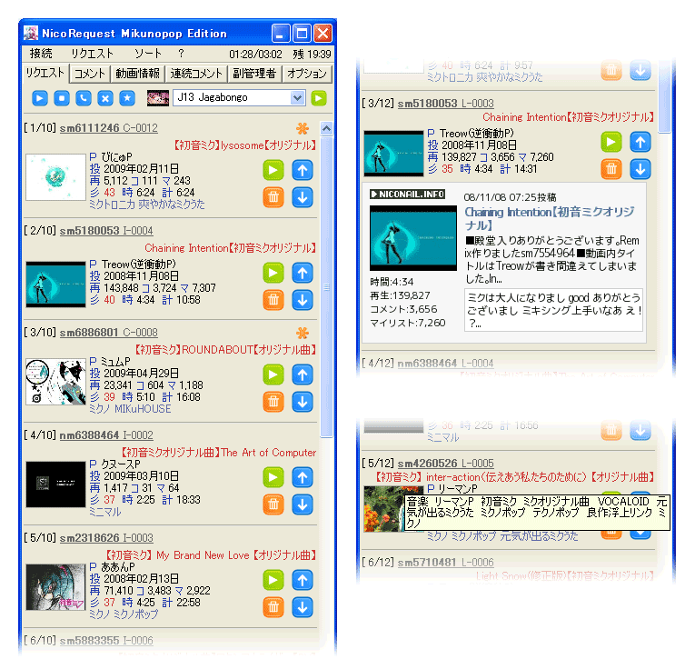

[トップページに戻る]
[放送主向け文書に戻る]
私が使っているニコリク（生放送ツール）を配布しています。ご利用は自己責任でどうぞ。
[2009.07.15] v1.06 NicoReqMikunopopEdition_106.exe
[2009.07.15] v1.06 NicoReqMikunopopEdition_106.zip
・w2kさんによって報告されたコメントログにおける日付フォーマット置換バグを修正しました。
[2009.07.13] v1.05 NicoReqMikunopopEdition_105.exe
[2009.07.13] v1.05 NicoReqMikunopopEdition_105.zip
・ウィンドウ外観をさらにシンプルにしました。
・再生中の曲の時間表示タイプをデフォルトで「カウントダウン方式」に変更しました。従来通りの方式に設定することもできます。
[2009.07.05] v1.04 NicoReqMikunopopEdition_104.exe
[2009.07.05] v1.04 NicoReqMikunopopEdition_104.zip
・ジャンル（タグ）をリクエストタブに表示するようになりました。曲の内容を表すタグに限定している点が特徴です。
必要がなければ、settings.js の１２７行目あたりをオフにしてください。
・ジングル一覧なども適宜変更しています。
[2009.07.04] v1.03 NicoReqMikunopopEdition_103.exe
[2009.07.04] v1.03 NicoReqMikunopopEdition_103.zip
・w2kさんによって報告された脆弱性を暫定的に修正しています。
1.02以前をお使いの方はアップデートしてください。
see http://jbbs.livedoor.jp/bbs/read.cgi/internet/2353/1236050050/411
・P名のリストを別ファイル（pnames.js）へ分離しました。
随時追加していますので、情報をお待ちしています。
・情報コメントに色を付けました。もっといい配色なども募集しています。
・[実験的] リスナーからのリクエストを、リクエストリストの
末尾ではなく先頭（上）に追加するオプションを追加しました。
※適当な実装のため、非推奨の隠し機能扱いです。
[2009.06.27] v1.02 NicoReqMikunopopEdition_102.exe
・動画毎のサムネイルを取得する代わりに、ダミーのサムネイル画像を表示する機能を追加しました。
settings.jsの６０行目付近「サムネイル画像表示」の項を参照してください。
・ミクノ度をサーバに問い合わせないオプションを追加しました。
settings.jsの７２行目付近「ミクノ度」の項を参照してください。
・「ミ」は正式に「彡」に進化しました。( ﾟ∀ﾟ)o "彡" ﾟびにゅP！びにゅP！
[2009.06.22] v1.01 NicoReqMikunopopEdition_101.exe
・インストーラ化しました（趣味で）。
・アプリアイコンをコミュアイコンに変更しました（趣味で）。
次のアドレスで公開しています。少し詳しい README もこちらで読めます。
http://github.com/ryochin/nicoreq_mikunopop/tree/master
簡単な使い方、注意点や再配布条件などは同梱の README.txt を参照してください。
開発版のスクリーンショットです（ちょい古い）。

不具合、改善点や要望などありましたらご連絡ください。
[トップページに戻る]
[放送主向け文書に戻る]